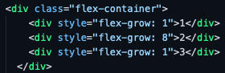
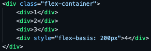

with the power of CSS, you can do a lot of crazy stuff on your webpage with the help of Flexboxes
as such, I'll be teaching you about 3 different flexbox item properties, and 3 flexbox container properties. let's start with item properties.
if you would, please take a glance at the boxes below:
at first glace, it seems like all I did was change the box names to be out of normal order.
however, let's get a closer look at the code...
the boxes are technically in the right order, but are being switched based on the values assigned to the order property.
so with the order property, we can rearange flexbox items on the fly without multiple copies, pastes, and deletes.
ever wanted one of your flexbox items to grow faster than the others?
(considering you're here, the answer is most likely no, but for the purpose of this segment just say yes)
WELL NOW YOU CAN!
observe the boxes below, and play around with window size a bit.
No matter what, it seems like 2 is growing at a faster rate, staying multiple sizes larger than the other boxes

using the flex-growth property, we can adjust the rate at which a flex item grows relative to other items.
a similar tag is flex-shrink, which determines the rate at which it shrinks relative to others!
to activate it, set it up similar to above, but replace "flex-grow" with "flex-shrink".
one last note is that both will take up the length of the screen by default
the Flex Basis property is defenitely one of the simpler properties
using it, you can set the initial length of any specific boxes to something that isn't the original
to accomplish this, simply give one of the divs the "flex-basis" property, then set it to whatever you want!
 furthermore, unlike Flex-grow, the altered item will keep it's general length compared to the other boxes
so when you want